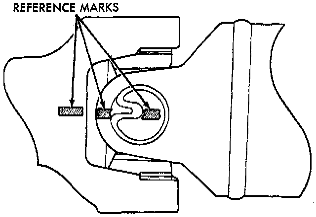

Drive/Propeller Shafts, Bearings and Joints: Service Precautions
NOTES:- Use the exact replacement parts called for when installing the propeller shafts. The use of the correct replacement parts helps to ensure safe operation. All fasteners must be torqued to the specified values for safe operation.

- Also make alignment reference marks on the propeller shaft yoke and axle, or transmission, yoke prior to servicing. This helps to eliminate possible vibration.
CAUTIONS:
- Do not allow the propeller shaft to drop or hang from any propeller shaft joint during removal. Attach the propeller shaft to the vehicle underside with wire to prevent damage to the joints.
- It is very important to protect the external machined surface of the slip yoke from damage during and after propeller shaft removal. If the yoke is damaged, the transmission extension seal may be damaged and therefore cause a leak.